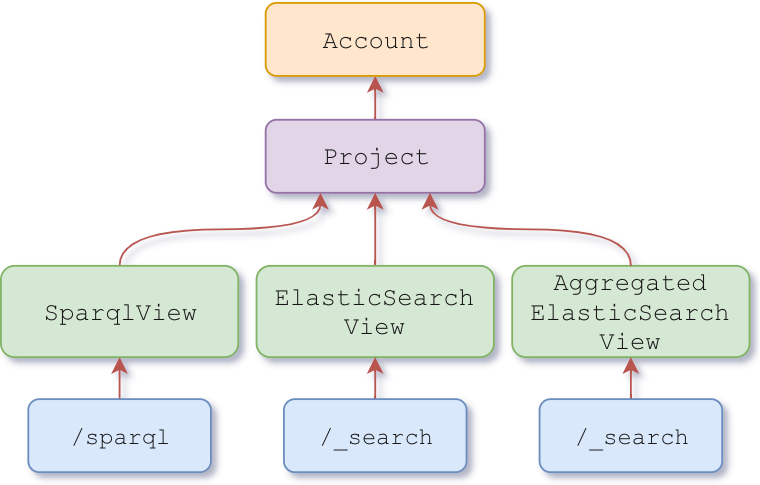

Views
Views are rooted in the /v1/views/{org_label}/{project_label} collection and are used to index the selected resources into a bucket.
Each view…
- belongs to a
projectidentifier by the label{project_label} - inside an
organizationidentifier by the label{org_label} - it is validated against the view schema.
Access to resources in the system depends on the access control list set for them. Depending on the access control list, a caller may need to prove its identity by means of an access token passed to the Authorization header (Authorization: Bearer {token}). Please visit Authentication to learn more about how to retrieve an access token.
The simplest way to explore our API is using Postman. Once downloaded, import the views collection.
If your deployment is protected by an access token:
Edit the imported collection -> Click on the Authorization tab -> Fill the token field.
View types

There are several types of views, which relies on different technology to perform the indexing
SparqlView
This view creates a SPARQL namespace where it stores all the resource’s graph inside the view project.
This view gets automatically created when the project is created and it cannot be modified.
SparqlView payload
{
"@id": "nxv:defaultSparqlIndex",
"@type": [ "View", "SparqlView" ]
}
ElasticSearchView
The described features are in @Alpha phase of development. The operations might change in the future.
This view creates an ElasticSearch index where it stores the selected resources inside the view project.
A default view gets automatically created when the project is created but other views can be created.
ElasticSearchView payload
{
"@id": "{someid}",
"@type": [ "View", "ElasticSearchView", "Alpha" ],
"resourceSchemas": [ "{resourceSchema}", ...],
"resourceTag": "{tag}",
"sourceAsText": {sourceAsText},
"includeMetadata": {includeMetadata},
"mapping": _elasticsearch mapping_
}
where…
{resourceSchema}: Iri - It selects the resources that are validated against the provided schema Iri. This field is optional.{tag}: String - It selects the resources with the provided tag. This field is optional._elasticsearch mapping_: Json object - It defines the value types for the Json keys, as stated at the ElasticSearch mapping documentation.{sourceAsText}: Boolean - If true, the resource’s payload will be stored in the ElasticSearch document as a single escaped string value of the key_original_source. If false, the resource’s payload will be stored normally in the ElasticSearch document. The default value isfalse.{includeMetadata}: Boolean - If true, the resource’s nexus metadata (_constrainedBy,_deprecated, …) will be stored in the ElasticSearch document. Otherwise it won’t. The default value isfalse.{someid}: Iri - the @id value for this view.
AggregateElasticSearchView
The described features are in @Alpha phase of development. The operations might change in the future.
This view is an aggregate of ElasticSearchViews. The view itself does not create any index, but it reference to the already existing indices of the linked ElasticSearchViews.
When performing queries on the _search endpoint, this view will make use of the multi-index query capabilities of ElasticSearch in order to select the indices of every view present on this aggregate view.
If the caller does not have the permission views/query on all the projects defined on the aggregated view, only a subset of indices (or none) will be selecting, respecting the defined permissions.

AggregateElasticSearchView payload
{
"@id": "{someid}",
"@type": [ "View", "AggregateElasticSearchView", "Alpha" ],
"views": [
{
"project": "{project}",
"viewId": "{viewId}"
},
...
]
}
where…
{project}: String - the project, defined as{org_label}/{project_label}, where the{viewId}is located.{viewId}: Iri - The view @id value to be aggregated.
Create an ElasticSearchView using POST
POST /v1/view/{org_label}/{project_label}
{...}
The json payload:
- If the
@idvalue is found on the payload, this @id will be used. - If the
@idvalue is not found on the payload, an @id will be generated as follows:base:{UUID}. Thebaseis theprefixdefined on the view’s project ({project_label}).
Example
- Request
-
Full source at GitHubcurl -XPOST -H "Content-Type: application/json" "https://nexus.example.com/v1/views/myorg/myproj" -d \ '{ "@id": "https://bluebrain.github.io/nexus/vocabulary/myview", "@type": [ "ElasticSearchView", "Alpha" ], "mapping": { "dynamic": false, "properties": { "@id": { "type": "keyword" }, "@type": { "type": "keyword" }, "name": { "type": "keyword" }, "number": { "type": "long" }, "bool": { "type": "boolean" } } }, "includeMetadata": false, "sourceAsText": false, "resourceSchemas": "https://bluebrain.github.io/nexus/schemas/myschema" }' - Payload
-
Full source at GitHub{ "@id": "https://bluebrain.github.io/nexus/vocabulary/myview", "@type": [ "ElasticSearchView", "Alpha" ], "mapping": { "dynamic": false, "properties": { "@id": { "type": "keyword" }, "@type": { "type": "keyword" }, "name": { "type": "keyword" }, "number": { "type": "long" }, "bool": { "type": "boolean" } } }, "includeMetadata": false, "sourceAsText": false, "resourceSchemas": "https://bluebrain.github.io/nexus/schemas/myschema" } - Response
-
Full source at GitHub{ "@context": "https://bluebrain.github.io/nexus/contexts/resource.json", "@id": "nxv:myview", "@type": [ "ElasticSearchView", "View", "Alpha" ], "_self": "https://nexus.example.com/v1/schemas/myorg/myproj/nxv:myview", "_constrainedBy": "https://bluebrain.github.io/nexus/schemas/view", "_project": "https://nexus.example.com/v1/projects/myorg/myproj", "_rev": 1, "_deprecated": false, "_createdAt": "2018-09-18T16:39:22.748Z", "_createdBy": "https://nexus.example.com/v1/realms/myrealm/users/john", "_updatedAt": "2018-09-18T16:39:22.748Z", "_updatedBy": "https://nexus.example.com/v1/realms/myrealm/users/john" }
Create an ElasticSearchView using PUT
This alternative endpoint to create a view is useful in case the json payload does not contain an @id but you want to specify one. The @id will be specified in the last segment of the endpoint URI.
PUT /v1/views/{org_label}/{project_label}/{view_id}
{...}
Note that if the payload contains an @id different from the {view_id}, the request will fail.
Example
- Request
-
Full source at GitHubcurl -XPUT -H "Content-Type: application/json" "https://nexus.example.com/v1/views/myorg/myproj/nxv:myview" -d \ '{ "@type": [ "ElasticSearchView", "Alpha" ], "mapping": { "dynamic": false, "properties": { "@id": { "type": "keyword" }, "@type": { "type": "keyword" }, "name": { "type": "keyword" }, "number": { "type": "long" }, "bool": { "type": "boolean" } } }, "includeMetadata": false, "sourceAsText": false, "resourceSchemas": "https://bluebrain.github.io/nexus/schemas/myschema" }' - Payload
-
Full source at GitHub{ "@type": [ "ElasticSearchView", "Alpha" ], "mapping": { "dynamic": false, "properties": { "@id": { "type": "keyword" }, "@type": { "type": "keyword" }, "name": { "type": "keyword" }, "number": { "type": "long" }, "bool": { "type": "boolean" } } }, "includeMetadata": false, "sourceAsText": false, "resourceSchemas": "https://bluebrain.github.io/nexus/schemas/myschema" } - Response
-
Full source at GitHub{ "@context": "https://bluebrain.github.io/nexus/contexts/resource.json", "@id": "nxv:myview", "@type": [ "ElasticSearchView", "View", "Alpha" ], "_self": "https://nexus.example.com/v1/schemas/myorg/myproj/nxv:myview", "_constrainedBy": "https://bluebrain.github.io/nexus/schemas/view", "_project": "https://nexus.example.com/v1/projects/myorg/myproj", "_rev": 1, "_deprecated": false, "_createdAt": "2018-09-18T16:39:22.748Z", "_createdBy": "https://nexus.example.com/v1/realms/myrealm/users/john", "_updatedAt": "2018-09-18T16:39:22.748Z", "_updatedBy": "https://nexus.example.com/v1/realms/myrealm/users/john" }
Update an ElasticSearchView
This operation overrides the payload.
In order to ensure a client does not perform any changes to a view without having had seen the previous revision of the view, the last revision needs to be passed as a query parameter.
PUT /v1/views/{org_label}/{project_label}/{view_id}?rev={previous_rev}
{...}
… where {previous_rev} is the last known revision number for the view.
Example
- Request
-
Full source at GitHubcurl -XPUT -H "Content-Type: application/json" "https://nexus.example.com/v1/views/myorg/myproj/nxv:myview?rev=1" -d \ '{ "@type": [ "ElasticSearchView", "Alpha" ], "mapping": { "dynamic": false, "properties": { "@id": { "type": "keyword" }, "@type": { "type": "keyword" }, "name": { "type": "keyword" }, "number": { "type": "long" }, "bool": { "type": "boolean" } } }, "includeMetadata": false, "sourceAsText": false, "resourceSchemas": "https://bluebrain.github.io/nexus/schemas/myschema" }' - Payload
-
Full source at GitHub{ "@type": [ "ElasticSearchView", "Alpha" ], "mapping": { "dynamic": false, "properties": { "@id": { "type": "keyword" }, "@type": { "type": "keyword" }, "name": { "type": "keyword" }, "number": { "type": "long" }, "bool": { "type": "boolean" } } }, "includeMetadata": false, "sourceAsText": false, "resourceSchemas": "https://bluebrain.github.io/nexus/schemas/myschema" } - Response
-
Full source at GitHub{ "@context": "https://bluebrain.github.io/nexus/contexts/resource.json", "@id": "nxv:myview", "@type": [ "ElasticSearchView", "View", "Alpha" ], "_self": "https://nexus.example.com/v1/schemas/myorg/myproj/nxv:myview", "_constrainedBy": "https://bluebrain.github.io/nexus/schemas/view", "_project": "https://nexus.example.com/v1/projects/myorg/myproj", "_rev": 2, "_deprecated": false, "_createdAt": "2018-09-18T16:39:22.748Z", "_createdBy": "https://nexus.example.com/v1/realms/myrealm/users/john", "_updatedAt": "2018-09-18T16:42:22.748Z", "_updatedBy": "https://nexus.example.com/v1/realms/myrealm/users/john" }
Create an AggregateElasticSearchView using PUT
This alternative endpoint to create a view is useful in case the json payload does not contain an @id but you want to specify one. The @id will be specified in the last segment of the endpoint URI.
PUT /v1/views/{org_label}/{project_label}/{view_id}
{...}
Note that if the payload contains an @id different from the {view_id}, the request will fail.
Example
- Request
-
Full source at GitHubcurl -XPUT -H "Content-Type: application/json" "https://nexus.example.com/v1/views/myorg/myproj3/nxv:myagg" -d \ '{ "@context": { "nxv": "https://bluebrain.github.io/nexus/vocabulary/" }, "@type": [ "AggregateElasticSearchView", "Alpha" ], "views": [ { "project": "myorg/myproj", "viewId": "nxv:myview" }, { "project": "myorg/myproj2", "viewId": "nxv:myview2" } ] }' - Payload
-
Full source at GitHub{ "@context": { "nxv": "https://bluebrain.github.io/nexus/vocabulary/" }, "@type": [ "AggregateElasticSearchView", "Alpha" ], "views": [ { "project": "myorg/myproj", "viewId": "nxv:myview" }, { "project": "myorg/myproj2", "viewId": "nxv:myview2" } ] } - Response
-
Full source at GitHub{ "@context": "https://bluebrain.github.io/nexus/contexts/resource.json", "@id": "nxv:myview", "@type": [ "AggregateElasticSearchView", "View", "Alpha" ], "_self": "https://nexus.example.com/v1/schemas/myorg/myproj3/nxv:myagg", "_constrainedBy": "https://bluebrain.github.io/nexus/schemas/view", "_project": "https://nexus.example.com/v1/projects/myorg/myproj3", "_rev": 1, "_deprecated": false, "_createdAt": "2018-09-18T16:39:22.748Z", "_createdBy": "https://nexus.example.com/v1/realms/myrealm/users/john", "_updatedAt": "2018-09-18T16:39:22.748Z", "_updatedBy": "https://nexus.example.com/v1/realms/myrealm/users/john" }
Tag a View
Links a view’s revision to a specific name.
Tagging a view is considered to be an update as well.
PUT /v1/views/{org_label}/{project_label}/{view_id}/tags?rev={previous_rev}
{
"tag": "{name}",
"rev": {rev}
}
… where
{previous_rev}: Number - the last known revision for the resolver.{name}: String - label given to the view at specific revision.{rev}: Number - the revision to link the provided{name}.
Example
- Request
-
Full source at GitHubcurl -XPUT -H "Content-Type: application/json" "https://nexus.example.com/v1/views/myorg/myproj/nxv:myview/tags?rev=2" -d \ '{ "tag": "mytag", "rev": 1 }' - Payload
-
Full source at GitHub{ "tag": "mytag", "rev": 1 } - Response
-
Full source at GitHub{ "@context": "https://bluebrain.github.io/nexus/contexts/resource.json", "@id": "nxv:myview", "@type": [ "ElasticSearchView", "View", "Alpha" ], "_self": "https://nexus.example.com/v1/schemas/myorg/myproj/nxv:myview", "_constrainedBy": "https://bluebrain.github.io/nexus/schemas/view", "_project": "https://nexus.example.com/v1/projects/myorg/myproj", "_rev": 3, "_deprecated": false, "_createdAt": "2018-09-18T16:39:22.748Z", "_createdBy": "https://nexus.example.com/v1/realms/myrealm/users/john", "_updatedAt": "2018-09-18T16:52:22.748Z", "_updatedBy": "https://nexus.example.com/v1/realms/myrealm/users/john" }
Deprecate a view
Locks the view, so no further operations can be performed. It also stops indexing any more resources into it.
Deprecating a view is considered to be an update as well.
DELETE /v1/views/{org_label}/{project_label}/{view_id}?rev={previous_rev}
… where {previous_rev} is the last known revision number for the view.
Example
- Request
-
Full source at GitHubcurl -XDELETE "https://nexus.example.com/v1/views/myorg/myproj/nxv:myview?rev=5" - Response
-
Full source at GitHub{ "@context": "https://bluebrain.github.io/nexus/contexts/resource.json", "@id": "nxv:myview", "@type": [ "ElasticSearchView", "View", "Alpha" ], "_self": "https://nexus.example.com/v1/schemas/myorg/myproj/nxv:myview", "_constrainedBy": "https://bluebrain.github.io/nexus/schemas/view", "_project": "https://nexus.example.com/v1/projects/myorg/myproj", "_rev": 6, "_deprecated": true, "_createdAt": "2018-09-18T16:39:22.748Z", "_createdBy": "https://nexus.example.com/v1/realms/myrealm/users/john", "_updatedAt": "2018-09-18T17:10:22.748Z", "_updatedBy": "https://nexus.example.com/v1/realms/myrealm/users/john" }
Fetch a view (current version)
GET /v1/views/{org_label}/{project_label}/{view_id}
Example
- Request
-
Full source at GitHubcurl "https://nexus.example.com/v1/views/myorg/myproj/nxv:myview" - Response
-
Full source at GitHub{ "@context": [ "https://bluebrain.github.io/nexus/contexts/view.json", "https://bluebrain.github.io/nexus/contexts/resource.json" ], "@id": "nxv:myview2", "@type": [ "ElasticSearchView", "View", "Alpha" ], "includeMetadata": false, "mapping": { "dynamic": false, "properties": { "@id": { "type": "keyword" }, "@type": { "type": "keyword" }, "bool": { "type": "boolean" }, "name": { "type": "keyword" }, "number": { "type": "long" } } }, "resourceSchemas": [ "https://bluebrain.github.io/nexus/schemas/myschema" ], "sourceAsText": false, "_uuid": "4f90ceff-45b7-442d-8536-d41705321d50", "_self": "https://nexus.example.com/v1/schemas/myorg/myproj/nxv:myview", "_constrainedBy": "https://bluebrain.github.io/nexus/schemas/view", "_project": "https://nexus.example.com/v1/projects/myorg/myproj", "_createdAt": "2018-09-18T16:39:22.748Z", "_createdBy": "https://nexus.example.com/v1/realms/myrealm/users/john", "_updatedAt": "2018-09-18T17:10:22.748Z", "_updatedBy": "https://nexus.example.com/v1/realms/myrealm/users/john", "_rev": 4, "_deprecated": true }
Fetch a view (specific version)
GET /v1/views/{org_label}/{project_label}/{view_id}?rev={rev}
… where {rev} is the revision number of the view to be retrieved.
Example
- Request
-
Full source at GitHubcurl "https://nexus.example.com/v1/views/myorg/myproj/nxv:myview?rev=4" - Response
-
Full source at GitHub{ "@context": [ "https://bluebrain.github.io/nexus/contexts/view.json", "https://bluebrain.github.io/nexus/contexts/resource.json" ], "@id": "nxv:myview2", "@type": [ "ElasticSearchView", "View", "Alpha" ], "includeMetadata": false, "mapping": { "dynamic": false, "properties": { "@id": { "type": "keyword" }, "@type": { "type": "keyword" }, "bool": { "type": "boolean" }, "name": { "type": "keyword" }, "number": { "type": "long" } } }, "resourceSchemas": [ "https://bluebrain.github.io/nexus/schemas/myschema" ], "sourceAsText": false, "_uuid": "4f90ceff-45b7-442d-8536-d41705321d50", "_self": "https://nexus.example.com/v1/schemas/myorg/myproj/nxv:myview", "_constrainedBy": "https://bluebrain.github.io/nexus/schemas/view", "_project": "https://nexus.example.com/v1/projects/myorg/myproj", "_createdAt": "2018-09-18T16:39:22.748Z", "_createdBy": "https://nexus.example.com/v1/realms/myrealm/users/john", "_updatedAt": "2018-09-18T17:10:22.748Z", "_updatedBy": "https://nexus.example.com/v1/realms/myrealm/users/john", "_rev": 4, "_deprecated": true }
Fetch a view (specific tag)
GET /v1/views/{org_label}/{project_label}/{view_id}?tag={tag}
… where {tag} is the tag of the view to be retrieved.
Example
- Request
-
Full source at GitHubcurl "https://nexus.example.com/v1/views/myorg/myproj/nxv:myview?tag=mytag" - Response
-
Full source at GitHub{ "@context": [ "https://bluebrain.github.io/nexus/contexts/view.json", "https://bluebrain.github.io/nexus/contexts/resource.json" ], "@id": "nxv:myview2", "@type": [ "ElasticSearchView", "View", "Alpha" ], "includeMetadata": false, "mapping": { "dynamic": false, "properties": { "@id": { "type": "keyword" }, "@type": { "type": "keyword" }, "bool": { "type": "boolean" }, "name": { "type": "keyword" }, "number": { "type": "long" } } }, "resourceSchemas": [ "https://bluebrain.github.io/nexus/schemas/myschema" ], "sourceAsText": false, "_uuid": "4f90ceff-45b7-442d-8536-d41705321d50", "_self": "https://nexus.example.com/v1/schemas/myorg/myproj/nxv:myview", "_constrainedBy": "https://bluebrain.github.io/nexus/schemas/view", "_project": "https://nexus.example.com/v1/projects/myorg/myproj", "_createdAt": "2018-09-18T16:39:22.748Z", "_createdBy": "https://nexus.example.com/v1/realms/myrealm/users/john", "_updatedAt": "2018-09-18T16:39:22.748Z", "_updatedBy": "https://nexus.example.com/v1/realms/myrealm/users/john", "_rev": 1, "_deprecated": false }
List views
GET /v1/views/{org_label}/{project_label}?from={from}&size={size}&deprecated={deprecated}&rev={rev}&type={type}&createdBy={createdBy}&updatedBy={updatedBy}
where…
{full_text_search_query}: String - can be provided to select only the views in the collection that have attribute values matching (containing) the provided token; when this field is provided the results will also include score values for each result{from}: Number - is the parameter that describes the offset for the current query; defaults to0{size}: Number - is the parameter that limits the number of results; defaults to20{deprecated}: Boolean - can be used to filter the resulting views based on their deprecation status{rev}: Number - can be used to filter the resulting views based on their revision value{type}: Iri - can be used to filter the resulting views based on their@typevalue. This parameter can appear multiple times, filtering further the@typevalue.{createdBy}: Iri - can be used to filter the resulting views based on their creator{updatedBy}: Iri - can be used to filter the resulting views based on the person which performed the last update
Example
- Request
-
Full source at GitHubcurl "https://nexus.example.com/v1/views/myorg/myproj" - Response
-
Full source at GitHub{ "@context": [ "https://bluebrain.github.io/nexus/contexts/search.json", "https://bluebrain.github.io/nexus/contexts/resource.json" ], "_total": 3, "_results": [ { "@id": "https://bluebrain.github.io/nexus/vocabulary/defaultElasticIndex", "@type": [ "https://bluebrain.github.io/nexus/vocabulary/View", "https://bluebrain.github.io/nexus/vocabulary/Alpha", "https://bluebrain.github.io/nexus/vocabulary/ElasticSearchView" ], "_self": "https://nexus.example.com/v1/schemas/myorg/myproj/nxv:defaultElasticIndex", "_constrainedBy": "https://bluebrain.github.io/nexus/schemas/view", "_project": "https://nexus.example.com/v1/projects/myorg/myproj", "_rev": 1, "_deprecated": false, "_createdAt": "2018-09-18T16:39:22.748Z", "_createdBy": "https://nexus.example.com/v1/realms/myrealm/users/john", "_updatedAt": "2018-09-18T17:10:22.748Z", "_updatedBy": "https://nexus.example.com/v1/realms/myrealm/users/john" }, { "@id": "https://bluebrain.github.io/nexus/vocabulary/defaultSparqlIndex", "@type": [ "https://bluebrain.github.io/nexus/vocabulary/View", "https://bluebrain.github.io/nexus/vocabulary/SparqlView" ], "_self": "https://nexus.example.com/v1/schemas/myorg/myproj/nxv:defaultSparqlIndex", "_constrainedBy": "https://bluebrain.github.io/nexus/schemas/view", "_project": "https://nexus.example.com/v1/projects/myorg/myproj", "_rev": 1, "_deprecated": false, "_createdAt": "2018-09-18T16:39:22.748Z", "_createdBy": "https://nexus.example.com/v1/realms/myrealm/users/john", "_updatedAt": "2018-09-18T17:10:22.748Z", "_updatedBy": "https://nexus.example.com/v1/realms/myrealm/users/john" }, { "@id": "https://bluebrain.github.io/nexus/vocabulary/myview2", "@type": [ "https://bluebrain.github.io/nexus/vocabulary/ElasticSearchView", "https://bluebrain.github.io/nexus/vocabulary/View", "https://bluebrain.github.io/nexus/vocabulary/Alpha" ], "_self": "https://nexus.example.com/v1/schemas/myorg/myproj/nxv:myview", "_constrainedBy": "https://bluebrain.github.io/nexus/schemas/view", "_project": "https://nexus.example.com/v1/projects/myorg/myproj", "_rev": 4, "_deprecated": true, "_createdAt": "2018-09-18T16:39:22.748Z", "_createdBy": "https://nexus.example.com/v1/realms/myrealm/users/john", "_updatedAt": "2018-09-18T17:10:22.748Z", "_updatedBy": "https://nexus.example.com/v1/realms/myrealm/users/john" } ] }
ElasticSearch query
Provides search functionality on the ElasticSearchView or AggregateElasticSearchView content.
POST /v1/views/{org_label}/{project_label}/{view_id}/_search
{...}
The supported payload is defined on the ElasticSearch documentation
The string documents is used as a prefix of the default ElasticSearch view_id
Example
- Request
-
Full source at GitHubcurl -XPOST -H "Content-Type: application/json" "https://nexus.example.com/v1/views/myorg/myproj/nxv:myview/_search" -d \ '{ "query": { "term": { "_deprecated": true } } }' - Response
-
Full source at GitHub{ "_shards": { "failed": 0, "skipped": 0, "successful": 0, "total": 0 }, "hits": { "hits": [ { "_score": 1.2039728, "_id": "http://example.com/myview", "_index": "kg_v1_803da242-d510-4e1a-a12d-d0e0b7018a41_684bd815-9273-46f4-ac1c-0383d4a98254_1", "_source": { "@id": "http://example.com/myview", "@type": [ "https://bluebrain.github.io/nexus/vocabulary/View", "https://bluebrain.github.io/nexus/vocabulary/ElasticSearchView", "https://bluebrain.github.io/nexus/vocabulary/Alpha" ], "_original_source": "{\"mapping\":\"{\\\"dynamic\\\":false,\\\"properties\\\":{\\\"@id\\\":{\\\"type\\\":\\\"keyword\\\"},\\\"@type\\\":{\\\"type\\\":\\\"keyword\\\"},\\\"name\\\":{\\\"type\\\":\\\"keyword\\\"},\\\"number\\\":{\\\"type\\\":\\\"long\\\"},\\\"bool\\\":{\\\"type\\\":\\\"boolean\\\"}}}\",\"_uuid\":\"89dd9858-cf87-4c46-94c2-24da0fcae0aa\",\"@context\":\"https://bluebrain.github.io/nexus/contexts/view\",\"@type\":[\"View\",\"ElasticSearchView\",\"Alpha\"],\"includeMetadata\":true,\"sourceAsText\":false}", "_self": "https://nexus.example.com/v1/schemas/myorg/myproj/nxv:myview", "_constrainedBy": "https://bluebrain.github.io/nexus/schemas/view", "_project": "https://nexus.example.com/v1/projects/myorg/myproj", "_rev": 6, "_deprecated": true, "_createdAt": "2018-09-18T16:39:22.748Z", "_createdBy": "https://nexus.example.com/v1/realms/myrealm/users/john", "_updatedAt": "2018-09-18T17:10:22.748Z", "_updatedBy": "https://nexus.example.com/v1/realms/myrealm/users/john" }, "_type": "doc" } ], "max_score": 1.2039728, "total": 1 }, "timed_out": false, "took": 11 }
SparQL query
Provides search functionality on the SparqlView content.
POST /v1/views/{org_label}/{project_label}/graph/sparql
"..."
The supported payload is defined on the SparQL documentation The Content-Type HTTP header for this request is application/sparql-query.
Example
- Request
-
Full source at GitHubcurl -XPOST -H "Content-Type: application/sparql-query" "https://nexus.example.com/v1/views/myorg/myproj/graph/sparql" -d \ 'SELECT ?s where {?s ?p ?o} LIMIT 2' - Response
-
Full source at GitHub{ "head": { "vars": [ "s" ] }, "results": { "bindings": [ { "s": { "type": "uri", "value": "http://example.com/myview" } }, { "s": { "type": "uri", "value": "http://example.com/other" } } ] } }
Views internals
When an asynchronous process that reads the view events from the Primary Store gets triggered, a new index (SparQL or ElasticSearch) gets created. After that, an endpoint (/sparql for SparQL view or /_search for ElasticSearch view) becomes available. The client can then perform queries against those endpoints.
The view provides the configuration of the index and defines which Events are going to be indexed.